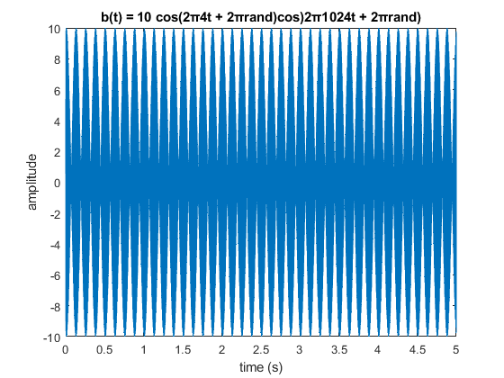

Contents
clear; close all; clc;
2.1 Beat Notes and Frequency Resolution
2.1.1 MATLAB Code for Beat Signals
Amp = 10;
fc = 1024;
phic = 2*pi*rand;
fDelta = 4;
phiDelta = 2*pi*rand;
tStart = 0;
tStop = 5;
fSamp = 8000;
tt = tStart:(1/fSamp):tStop;
xx = Amp*cos(2*pi*fc*tt+phic).*cos(2*pi*fDelta*tt+phiDelta);
2.1.2 Beat Notes Spectograms
2.1.2(a)
figure
plot(tt,xx)
title('b(t) = 10 cos(2π4t + 2πrand)cos)2π1024t + 2πrand)')
ylabel('amplitude')
xlabel('time (s)')

2.1.2(b)
spectrum_lines = [fc - fDelta; fc + fDelta];
2.1.2(c)
L_sect = 256;
figure
plotspec(xx,fSamp,L_sect); colorbar, grid on, zoom on
title('Beat note: L_{sect} = 256')
ylabel('Frequency (Hz)')
xlabel('t')
Undefined function 'plotspec' for input arguments of type 'double'.
Error in S2 (line 44)
plotspec(xx,fSamp,L_sect); colorbar, grid on, zoom on
2.1.2(d)
L_sect (2:5) = [512 1024 2048 4192];
figure
plotspec(xx,fSamp,3500); colorbar, grid on, zoom on
title('Beat note: L_{sect} = 3500')
ylabel('Frequency (Hz)')
xlabel('t')
T_sect = 3500 / fSamp;
2.1.3 Inverse Relationship: Section Length vs. Frequency Resolution
2.1.3(a)
C = T_sect * abs(spectrum_lines(1) - spectrum_lines(2));
2.1.3(b)
fDeltaNew = 16;
xxNew = Amp*cos(2*pi*fc*tt+phic).*cos(2*pi*fDeltaNew*tt+phiDelta);
new_spectrum_lines = [fc - fDeltaNew; fc + fDeltaNew];
predicted_T_sect = C / abs(new_spectrum_lines(1) - new_spectrum_lines(2));
predicted_L_sect = predicted_T_sect * fSamp;
figure
plotspec(xxNew,fSamp,L_sect(3)); colorbar, grid on, zoom on
title('Beat note')
ylabel('Frequency (Hz)')
xlabel('t')
figure
plotspec(xxNew,fSamp,predicted_L_sect); colorbar, grid on, zoom on
title('Beat note: L_{sect} = 875')
ylabel('Frequency (Hz)')
xlabel('t')